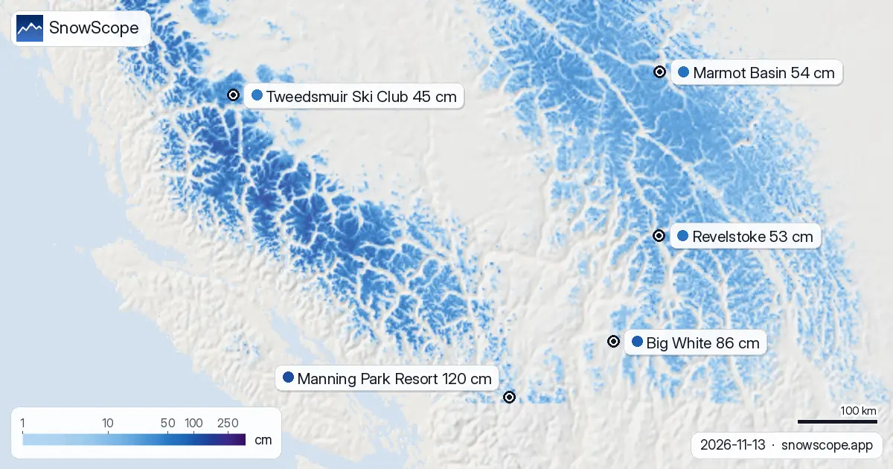

المساحة اللي فيها التلج فغرب كندا من السما: 201390 كم² (13 نونبر)
201390 كم²: هادي هي المساحة اللي فيها التلج اللي كيحسبها الموديل ديالنا فغرب كندا اليوم. آخر صورة صافية لكل بلاصة، حتى ل 13 نونبر: هادشي اللي كتحتافظ بيه الطبقة ديال الساتليت. لتحت، المحطات اللي فيهم أكثر تلج فغرب كندا. صورة بسما صافية هي أقرب حاجة عندنا لتصويرة ديال السلسلة كاملة فمرة وحدة.
شوف توقعات التلج مباشرة ديال Manning Park Resort فالتطبيق ديال SnowScopeالعلو ديال التلج، التنبيهات والخريطة 3D، فابور.
الخريطة ديال التلج اليوم
فالراس ديال اللائحة: Manning Park Resort، تقريبا 120 سم فالعلو. ومن بعد Big White 86 سم و Marmot Basin 54 سم.
الحساب ديال اليوم فغرب كندا: 31 محطة من 57 فيهم التلج فالعلو، و 201390 كم² ديال الأرض اللي فيها التلج.
المساحة البيضا فالخريطة دازت من 215390 كم² (11 نونبر) ل 201390 كم² اليوم، والتوقعات كتقول 210000 كم² نهار 16 نونبر.
| المحطة | العلو ديال التلج | تلج جديد، 72 س | جاي، الأيام الجاية | الفوق |
|---|---|---|---|---|
| Manning Park Resort | 120 سم | 0 سم | 10 سم | 1789 م |
| Big White | 86 سم | 0 سم | 16 سم | 2271 م |
| Marmot Basin | 54 سم | 1 سم | 3 سم | 2504 م |
| Revelstoke | 53 سم | 4 سم | 21 سم | 2224 م |
| Tweedsmuir Ski Club | 45 سم | 27 سم | 4 سم | 1650 م |

من المدار
Manning Park Resort: مغطية بالتلج فآخر صورة صافية، نهار 4 نونبر. سما صافية فوق Big White نهار 4 نونبر، والصورة كتبين التلج. Marmot Basin: مغطية بالتلج فآخر صورة صافية، نهار 4 نونبر. سما صافية فوق Revelstoke نهار 4 نونبر، والصورة كتبين التلج. Tweedsmuir Ski Club: مغطية بالتلج فآخر صورة صافية، نهار 10 نونبر.
التحقق بالمحطات
الساتليتات مايقدروش يشوفو من ورا السحاب، والتلج الرقيق بين الشجر يبان متفرق من الفوق. الموديل ديالنا كيعمر الأيام ديال السحاب، وبجوج كيعطيو صورة كنتيقو فيها.
شحال حنا متأكدين؟ القيم ديال المحطات تقديرات ديال الموديل للجهة الفوقانية؛ محطات القياس قياسات، كل وحدة فنقطة وحدة فالتاريخ المكتوب.
نصايح للي كيتزلجو
- الجهات اللي كتشوف للجنوب كتاخد أكثر شمس وكيدوب فيها التلج اللول؛ الجهات العاليين اللي كتشوف للشمال كيحافظو عليه أطول وقت.
- التلج فالخريطة ماكيعنيش بلي المحطة محلولة: شوف التيليسييج والتواريخ فالموقع ديال المحطة.
- التلج ديال بداية الموسم رقيق. بقى فالبيستات المحلولة والمدكوكة: الحجر والربيع يمكن يكونو تحت نيشان.
- فعّل تنبيه ديال التلج الطري فالتطبيق ديال SnowScope باش تعرف إمتى Manning Park Resort يجيها تلج جديد.
على هاد الأرقام
العلو ديال التلج فالمحطات هو أكثر تلج فالجهة الفوقانية حسب الموديل ديال التلج ديال SnowScope (تقريبا 1 كم، الحساب ديال 13 نونبر)؛ هادو تقديرات لمنطقة، ماشي قياس فنقطة وحدة. الأرقام ديال محطات القياس مقاسة فالتاريخ المكتوب. التوقعات يمكن تتبدل. ديما شوف النشرة الرسمية ديال الانهيارات قبل ما تخرج من البيست.
النشرات الرسمية ديال الانهيارات: Avalanche Canada
كيفاش تستاشهد بهاد المقال
للبحث، التعليم ولا الصحافة: الأرقام والرسومات تقدر تعاود تخدم بيهم بحرية تحت CC BY 4.0 مع هاد الاستشهاد.
SnowScope (2026), المساحة اللي فيها التلج فغرب كندا من السما: 201390 كم² (13 نونبر), https://snowscope.app/blog/ar/2026/11/western-canada-satellite-snow-view-13-november-2026.html, تشاف ف 2026-11-13
SnowScope (Atlas Labs). (2026, November 13). المساحة اللي فيها التلج فغرب كندا من السما: 201390 كم² (13 نونبر). SnowScope snow reports. https://snowscope.app/blog/ar/2026/11/western-canada-satellite-snow-view-13-november-2026.html
BibTeX
@misc{snowscope2026westerncanadasatellitesn,
author = {{SnowScope (Atlas Labs)}},
title = {المساحة اللي فيها التلج فغرب كندا من السما: 201390 كم² (13 نونبر)},
year = {2026},
month = nov,
howpublished = {\url{https://snowscope.app/blog/ar/2026/11/western-canada-satellite-snow-view-13-november-2026.html}},
note = {Published 2026-11-13 19:19 UTC; accessed 2026-11-13}
}· CC BY 4.0 · الطريقة، الداتا والأدوات →
Manning Park Resort: التلج والحرارة حسب العلو، هاد الشتا مقارنة مع اللي فاتت (الأدوات) →
تابع Manning Park Resort
فابور: ميساج ملي يجي التلج، والتوقعات كل صباح.
تقارير أخرى ديال التلج

Revelstoke توقعات التلج: حتى ل 10–21 سم متوقعة حتى ل 16 نونبر (غرب كندا). ف Whistler Blackcomb، علو الجليد غادي يكون بين 1500 م و 2700 م نهار 13 …

38 سم ف 72 ساعة: هادا هو التلج الجديد اللي جا ل Tweedsmuir Ski Club. Tweedsmuir Ski Club زادت 38 سم ديال تلج جديد ف 72 ساعة اللي فاتو، منهم 35 سم ف …

أكثر تلج فغرب كندا كاين ف Big White: تقريبا 91 سم فالجهة الفوقانية، حسب الموديل ديال التلج ديالنا. من بعدها Silver Star (84 سم) و Harper Mountain (74 …